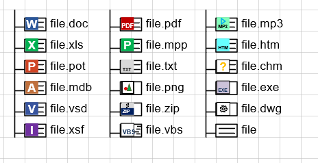
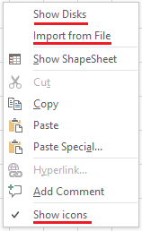

Visio TreeView template has been updated recently. The template got the ability to display some MIME types.
The new icons are shown below.

Typically, for office documents, one icon corresponds to many file extensions. So for example the same icon with the letter "V" is displayed for the extensions vsd, vss, vst, vsx, vsdx, vsdm, vssx, vssm, vstx, vstm, vdx.
The display of MIME types can be turned off. For this, the Show icons item has been added to the context menu of the page (at the bottom of the menu). Icons are only displayed if this item is tagged. If the menu item is not tagged, then the files are displayed without additional icons, that is, in the previous mode.

The addition of icons affected the size of the template. If the previous version was 58 KB, then the new version is already 150 KB. Therefore, in the delivery package for Gumroad, the new version does not replace the previous one, but is added to the package. You can use whichever version of the template you like best. The package now contains three versions:
- D2_2014e.vst - for filesystem only,
- D_2019_e.vst - added import from text file and Collapse menu,
- D_2020e.vst - added work with MIME types.
You can purchase the Visio TreeView template from Gumroad - https://gum.co/wkHG.
Users who previously purchased the template through Gumroad will receive the new version for free.
The link to the new version is distributed through automatic mailing. If you bought the previous version, but the automatic mailing for some reason did not work for you, write to me at gCroc@yandex.ru.
Let me remind you that there are some converters to a text file for external resources:
- FTP scanner for Visio TreeView template - in the form of EXE. Setup in a ZIP archive is attached to the article.
- Google Drive scanner for Visio TreeView template - the text of the Python script is attached to the article.